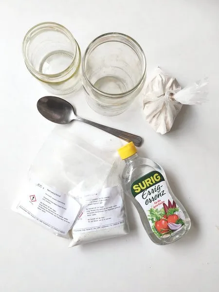
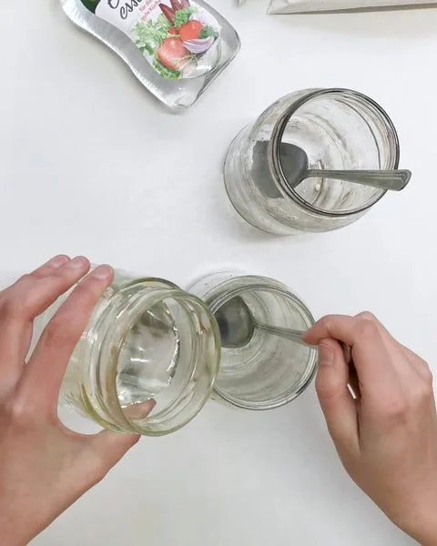
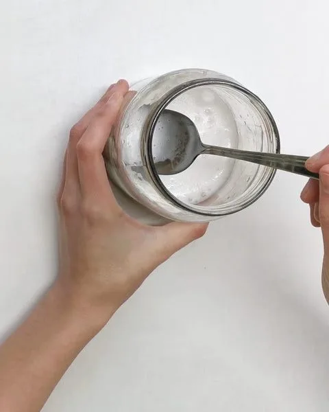
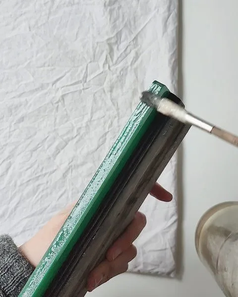
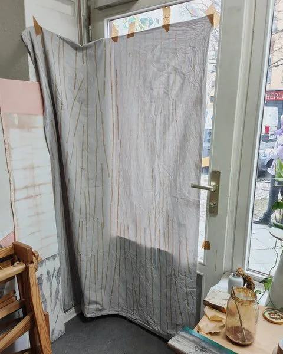
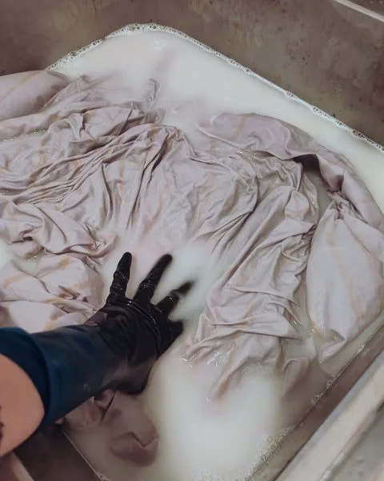
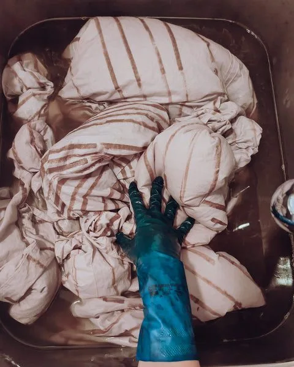
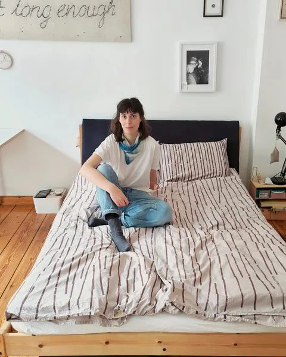

This recipe turned out to be quite a challenge, so if you're a beginner, you might want to start with simpler or smaller projects. The process itself is not that difficult, but there are quite a few ingredients you'll need, as well as a large container if you want to go as big as I did.
The recipe works for block printing, screen printing, and painting. It can be used for making iron paste, as well as aluminum paste, which can be applied to the textile and dyed afterward. Depending on the mordant (and the dye) you choose, the final outcome can also be multicolored. But even a simple graphic and monochromatic pattern can make for a great project, as illustrated below. So have a look at the process and, hopefully, enjoy trying it out.

What you need
For the mordant paste:
- iron acetate (steel wool + white vinegar)
- OR iron sulfate + white vinegar + soda ash (sodium carbonate)
- gum to thicken (guar gum or gum arabic)
- water
For removing the gum and neutralizing:
- wheat bran
- chalk (calcium carbonate)
For dyeing:
- a tannin-rich dye
…and of course, as always in natural dyeing, scoured textiles made with natural fibers, and utensils you don't use for cooking food.
Making the printing paste
For this project, I made a paste with iron, though you could swap the iron for aluminum, or mix both for an in-between final color. The paste can be applied to a dry textile either using blocks or brushes, or printed with a silk screen.
To make ferrous acetate, you can either refer to my recipe from last week or go as follows:
- dissolve around 5g of iron sulfate in a very small amount of warm water
- add around 100ml of white vinegar solution (5%) OR 20ml of white vinegar essence (25%) mixed with 80ml water
- combine with around 2.5g of soda ash
At this point, the solution will produce large amounts of froth, so make sure your container is big enough.
Now you can add gum to thicken the paste. Most recipes I found refer to guar gum, which is quite strong and rather slick. I worked with gum arabic because that's what I could find locally, and it's more sticky than slick and considerably less strong. I start with quite a runny paste and adjust as I go. For guar gum, that would be around 1g. For gum arabic, around 20 times that, so 20g. Both gums are water soluble and need around 30 minutes to thicken in the solution. If you have access to guar gum, that would be my first choice.


Applying the paste
That's the fun part. Sky is the limit, and you can use whatever you want to make a pattern. The paste should be thick enough not to run. I worked with a squeegee that I used as a block for printing lines. You can work with wooden blocks, rubber stamps, silk screens, or brushes. The fabric should be completely dry. Because the bedding was so big, I wish I had chosen an easier pattern, but well, I started so I had to finish. It took around eight hours over two days to print all the lines. I applied the paste to my squeegee with a brush and stamped it onto the fabric. The color at this point is rusty beige and only slightly visible. Iron binds with the fibers only where it was applied, and this is where the final image will appear.
After printing one side, I let the sheets dry for a day or two, making sure not to smudge the pattern. Because the paste soaks through both layers, I then stuck the sheets to the window and made identical marks on the other side. I let them dry again and then proceeded to the next step.


Removing the paste and neutralizing iron
I am lucky to have a big 100L sink for my dyeing projects, so I could rinse and neutralize all the sheets in one go. You could use your bathtub to do the same, or simply start with a smaller project. First, rinse your fabric thoroughly. Some gum will dissolve already at this point (remember it's water soluble), and loose iron particles will be removed too.
After that, you need to neutralize the acetic paste by soaking it in a chalk solution. You might also want to add some wheat bran, which has enzymes that help to remove any residual gum from the fabric. All that should be left after this step is iron bound with fibers, without any additional substances that might stop the dye from binding with the mordants. For the chalk and wheat bran solution, you should add around 10g of chalk for 1L of water. I certainly used less, as 1kg chalk sounded quite excessive to me, and it still worked well. I also added one cup of wheat bran, which I tied inside a muslin cloth and let soak in the solution for a few minutes.
Place your printed fabric in the solution and work it for a few minutes to fix the iron acetate and remove the gum. The solution might get a slightly muddy brown. After it's done, rinse one last time in clear water to remove the chalk.

Dyeing the fabric
You can proceed directly to dyeing now. I used my big sink again, filled with hot water, and added a few liters of a very concentrated dye. I chose tara powder as a dye. It's almost transparent in color, so it wouldn't show on the un-mordanted background, but it turns very dark when combined with iron. It is perfect for contrasting prints. You can use other tannin-rich dyes instead, like oak galls, sumac, tannic acid, black tea, cutch, etc. I simmered around 100g of tara powder in a few liters of water for an hour. After the dye was extracted, I sieved the liquid through a muslin cloth to catch the powder and poured it into my sink dye bath. I placed the sheets in the dye and the pattern immediately started turning dark. I moved the sheets regularly and let them dye for an hour.
When dyeing was done, I rinsed the sheets a few times. It took quite some time to get to the point where the color didn't bleed anymore. I added some white vinegar (around 100ml) to the final rinse, to make the now-alkaline pattern grayer, and that was, finally, the end of my biggest project to date.

Done
Writing it from under my new sheets, I am wondering if it was worth it. It certainly took longer than anticipated, because of the sheer size of the fabric and because the pattern was quite intricate. But, in my experience, the bigger the project, the more challenges, and the more I can learn, which was certainly the case. New ideas that this exercise sparked: screen printing with mordants, for sure. How about you?
Until next time,
Ania
